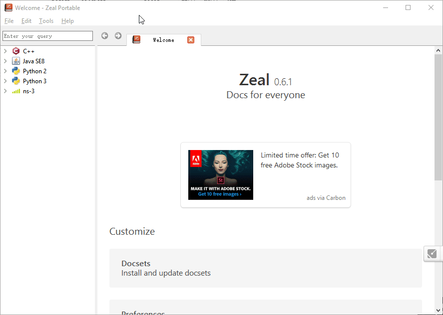

本章主要介绍NS-3当中的追踪框架。追踪框架主要用于追踪一个对象当中某个属性的变更、或者某个事件的发生。例如，当TCP的窗口变化的时候，我们希望获得窗口的变化过程。或者当网络中队列产生丢包的时候，我们希望获取这个事件以便统计丢包率等等。NS3使用回调的机制让我们能够方便地获取这些信息。
1. NS3追踪框架简介
在我们编写程序的时候，经常会想要知道一些变量的值，特别是在这个值变化的时候，我们希望知道这种变化。除了我们直接去获取这个值之外，我们更加希望用程序能够主动通知我们关于这个值的变化。除此之外，我们进行程序设计的时候，希望去统计一些变量的值，但是，我们要么在程序里面写死打印语句，让我把变量存到文件当中，并没有一种非常灵活的框架能够让用户编程的时候选择到底如何统计这些变量。
另外，我们希望在某些事件发生的时候，有一种监听机制，能够告诉我们什么时候发生了什么事件。在NS3当中，这种机制被称为追踪框架。它可以让我们用一种统一的方式，选择监听一个变量值的变化，也可以让我们监听一个事件的发生。
追踪框架严重的依赖于回调和属性框架（包括TypeId），如果对这部分内容还不是特别熟悉，请回顾相关章节。
NS3的追踪框架当中的基本概念分为追踪源和接收者。追踪源表示对象上我们可以监听的变量或事件，并且让我们访问该变量或者事件相关的对象；接收者是我们自己的代码，表示在监听到变量的变化或者事件的发生的时候要做什么事情。NS3提供一种统一的机制把接收器注册到追踪源上。
例如有一个追踪源，能让我们知道一个网络设备上收到了一个包，并且能让我们访问这个包。我们只要将我们的接收者注册到这个追踪源上，就可以在程序中知道网络设备上收到的包，并且获取这个包的内容，以便进行我们自己的逻辑处理。由此可见，追踪源本身并没有什么作用，我们必须将我们自己的代码注册到追踪源上，才能够发挥其作用。从这种意义上来说，追踪源可以认为是生产者，而接收者可以认为是消费者，生产者生产的东西必须消费才有意义。而消费的过程，恰恰是我们可以通过程序定制的部分，这就使得这个机制可以非常的灵活。
在NS3当中，模块的作者已经写好了大量的追踪源，模块的使用者只要将自己写的接收者注册到这些追踪源上，即可监听事件，而不需要去重新编译这些模块。一个追踪源可以注册多个接收者，当这个追踪源的事件发生的时候，多个接收者都可以收到相同的事件。当然追踪源也可以不注册任何的接受者，那么当事件发生的时候，就不会执行任何的用户代码。
把追踪源和接收者联系起来的这是NS3当中的回调机制。还记得我们在回调一章当中说的，回掉可以将两个相互关联的模块之解除耦合，而这正是追踪源所要做的事情。追踪源从底层来说其实是一种回调类型。和属性框架一样，追踪源将一种回调类型，以某种特殊的名字（字符串）添加到某个类的TypeId当中。一个追踪员可以向TypeId，当中注册多个回调类型，表明其可以触发多种事件。一个接收者将一个函数创建为回调后，和对象以追踪源的名字进行连接。这个对象的追踪源随即记录了这个函数的回调，若还有其他接收者被注册到同样的追踪源，这些接收者将被维护，在同一个列表当中。当追踪源的事件发生之后，它便会遍历这个回调列表，然后依次调用这些回调，以通知它们事件的发生。追踪源所注册的回调类型可以带有参数，也可以不带有参数，若带有参数的话表示事件发生的详细信息可以被接收者获取。
在NS3当中有两种不同类型的追踪源，一种用来追踪数值的变化，我将其称为数值类型追踪源；另外一种用来追踪事件的发生，我将其称为事件追踪源。
2. 数值追踪源
我们首先来看看数值追踪源。它的所用就是追踪数值的变化，这个数值一般是NS3对象的某个成员变量，除此之外，这个变量的类型需要使用TracedValue<>来进行包装。下面我们通过自己创建一个数值追踪源来了解数值追踪源的原理：
1 |
|
代码定义了MyObject类，然后在其TypeId当中添加了一个数值追踪源，并将追踪源绑定到一个成员变量m_value上。如果我们向该追踪源添加一个接收者，那么当成员变量的值变化的时候，追踪源就可以收到这个变化的事件。其中值得注意的是成员变量的类型，需要使用TracedValue<>类型来进行包装。例如，本来成员变量类型应该是uint32_t类型（无符号32位整型），用TracedValue<>包装之后就变为TracedValue<uint32_t>。
AddTraceSource方法有四个必选参数：
- name：追踪源的名字
- helpMsg：对追踪源的一个解释
- accessor：访问器（详见属性框架一章）
- callback：回调类型的字符串描述
另有两个可选参数（具体解释请参考属性框架一章）：
- supportLevel
- supportMsg
接下来我们看一下TracedValue类的定义代码：
1 | template<typename T> |
可以发现，TracedValue其实是一个模板类。其中封装了可以表示为各种类型的实际数据类型（在上面的例子中就是始uint32_t）和一个回调，并且重载了自增自减和赋值操作符。实际上这些操作符其实就是去改变这个变量的值的操作，我们以赋值操作为例：
1 | TracedValue &operator = (const TracedValue &o) |
可见其底层就是调用了Set方法，而Set方法除了设置变量的值之外，还调用了回调并且将原值和新值作为回调的参数。那TracedCallback又是什么呢？我们看一下TracedCallback的关键代码：
1 | class TracedCallback |
可以看出TracedCallback实际上就是一个回调列表，并且提供了两个方法向列表中加入回调，和两个方法从列表中删除回调。执行了这一个回调，就相当于执行了一系列的回调。
此外，从回调类型的定义也可以看出，TracedCallback要求的回调函数是没有返回值的最多不超过8个参数：
1 | …… |
回到我们的例子当中，我们现在写一个回调函数，并将其注册到追踪源当中：
1 | void |
程序中，我们将一个函数创建为回调，并将其作为接收者注册到MyObject对象的追踪源上。随后我们两次更改了MyObject对象的MyInteger追踪源的值。当我们运行程序后，可以得到如下结果：
1 | Waf: Entering directory `/home/rainsia/Applications/ns-allinone-3.29/ns-3.29/build' |
可见我们每次修改追踪源的值的时候，注册的接收者函数都会被主动调用。接下来我们修改一下程序，向同一个追踪源中注册两次回调：
1 | void |
当我们再次运行程序，可以得到如下结果:
1 | Waf: Entering directory `/home/rainsia/Applications/ns-allinone-3.29/ns-3.29/build' |
可见，此时每对追踪源进行一次修改，将会调用回调函数两次。
3. 事件追踪
除了对数值的更改进行追踪之外，NS3的追踪源也可以追踪事件的发生（函数的调用）。下面使用实际的例子来说明。还是启动服务器的例子，我们现在希望服务器开始启动、服务器启动完成、启动失败和关闭的时候获得提示。那么我们可以注册三个追踪源，分别表示启动成功、启动失败和服务器关闭的事件。但是和数值追踪源不一样，追踪时机并不是数值的变化，而是某种事件的发生（实际上就是某个函数被调用）。
事件追踪源的类型直接使用TracedCallback（请参见前面数值追踪源部分）表示，因此我们定义四个成员变量：
1 | TracedCallback<uint32_t> m_startingTrace; |
分别表示四个事件的回调列表，其中第一个回调表示服务器正在启动，具有一个参数是端口号；第二个回调表示服务器已经启动完成，也具有一个参数是端口号；第三个回调表示服务器启动失败，有一个参数是失败原因；第四个回调表示服务器已经停止，没有任何的参数。同时和这四个类型对应的，应该定义四个底层的函数指针：
1 | typedef void (* ServerStartingTracedCallback)(uint32_t port); |
随后我们便可以在TypeId当中加入四个追踪源：
1 | .AddTraceSource ("ServerStarting", |
随后只要在程序适当的地方分别调用这四个回调即可。完整的程序如下:
1 |
|
接下来我们在主程序当中定义四个函数，分别来处理这四种事件。然后在主函数当中注册这四个追踪源：
1 | void WatchStarting(uint32_t port) |
最终我们运行程序得到如下的结果:
1 | Waf: Entering directory `/home/rainsia/Applications/ns-allinone-3.29/ns-3.29/build' |
可见在服务器刚刚启动的时候，我们可以得到这个事件；而在服务器启动失败的时候，我们可以获取这个是电源注册的这回调也会被主动的调用。我们再修改端口号，尝试一下服务器启动成功的情况:
1 | Waf: Entering directory `/home/rainsia/Applications/ns-allinone-3.29/ns-3.29/build' |
可见，服务器启动成功的时候，我们注册的回调会被主动调用。而在服务器停止的时候，我们注册的停止回调，也会被主动调用。
4. NS3当中的追踪源
NS3提供的类当中，大量的使用了追踪源的概念，其中有大量的追踪源，我们可以直接使用。为了方便使用NS3的API文档，给我们提供了所有追踪源的备查页面，我们可以在https://www.nsnam.org/docs/release/3.29/doxygen/_trace_source_list.html获得。
此外，每一个类的文档当中也描述了这个类当中所有可以注册的追踪源。我们以TCP类（实际上其主要的实现都是在TcpSocketBase当中完成的，）为例子，来看一下其中的追踪源：
